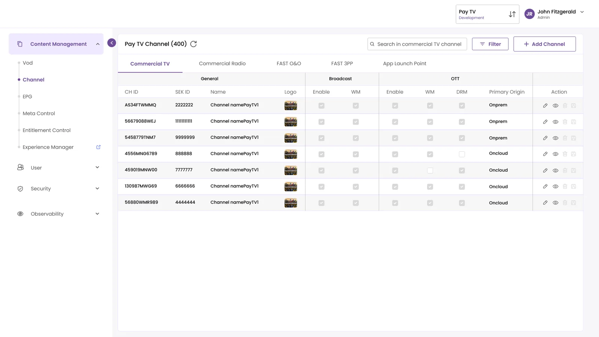
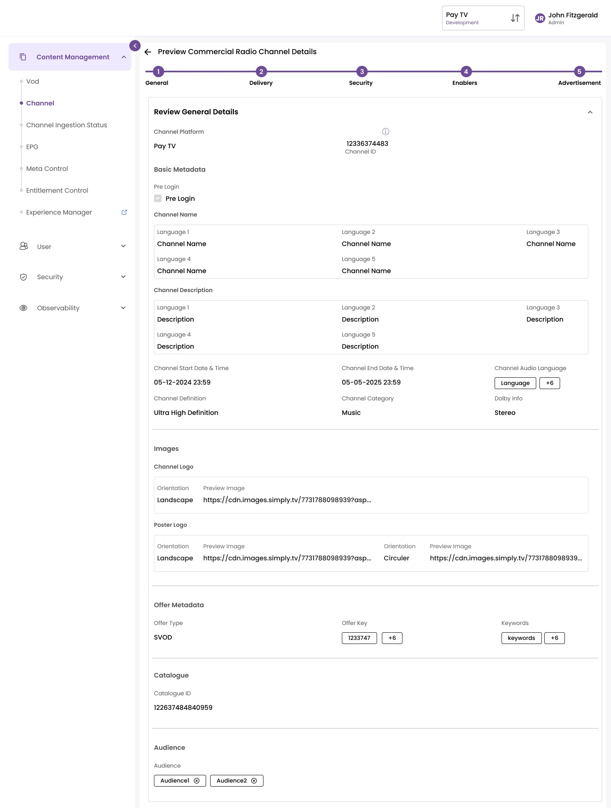
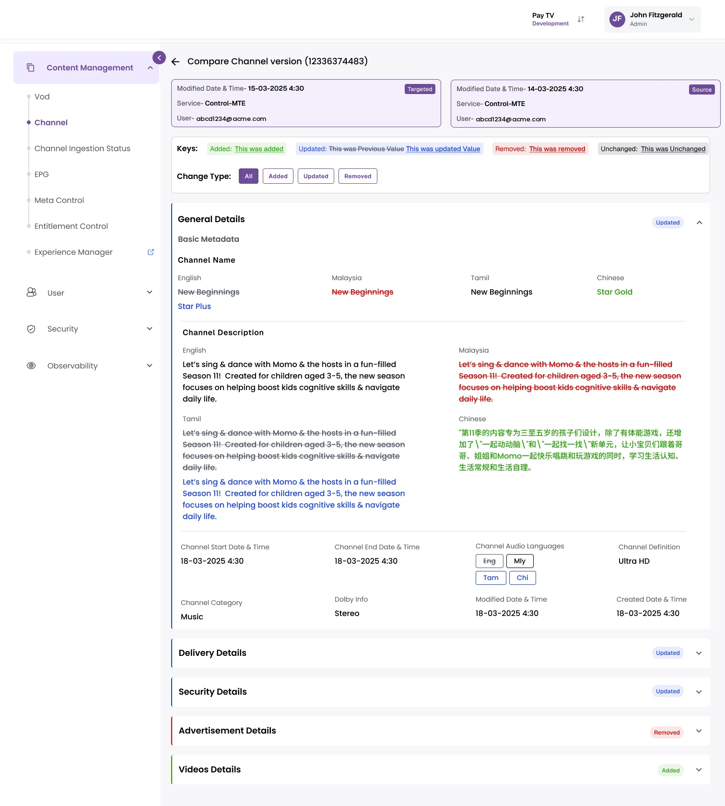
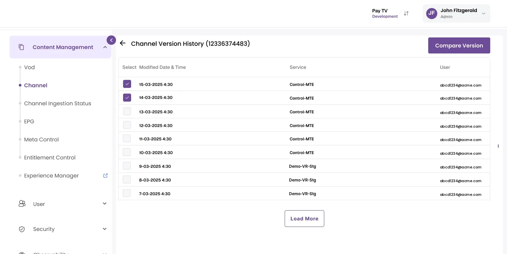
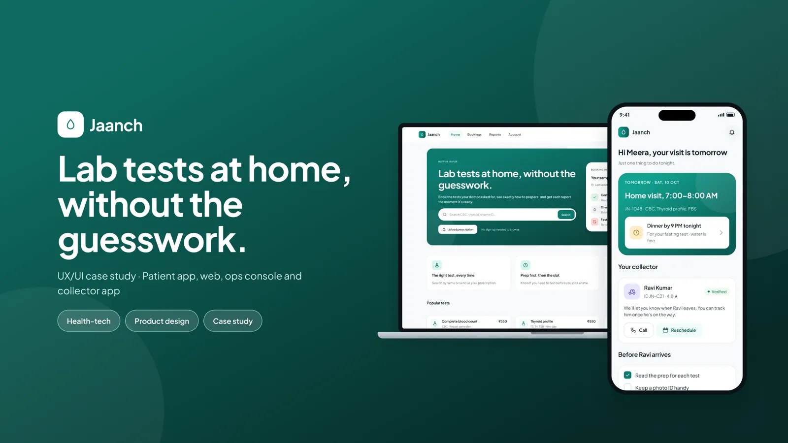
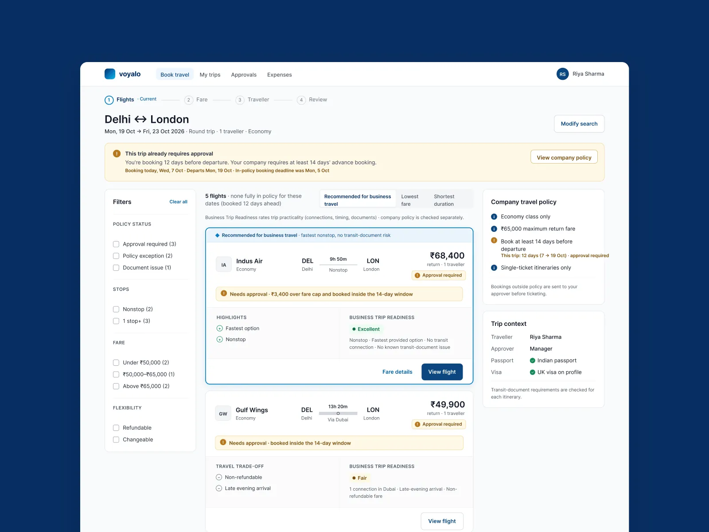

I make complicated
systems feel calm.
I'm Prashakha, a senior UI/UX designer with over six years of experience. I take dense business rules and turn them into screens people can use without a manual. Right now I lead UX on an enterprise OTT operator console, where a single form can hold 150 fields and every change has to be traceable.
Four case studies.
Two from work, two of my own.
The first two shipped on the enterprise console I work on today. The other two are concept projects I did on my own to work in healthcare and travel. I've written each one the way I would talk you through it in an interview.


Channel Creation: from a one line brief to 150 fields
The brief was one sentence. I worked with Solution Architecture and Engineering to find every field a channel needs, then grouped them into a five step form with validation, a preview before submit, safe deletion and live job tracking.


Redesigning the audit experience
To see what changed on a channel, operators had to leave it, remember its ID and rebuild filters in a separate module. I moved version history into the channel page and added a side by side comparison that highlights every change.

Jaanch: lab tests at home, without the guesswork
Booking a home lab test is easy. People get lost after that, when they need to prepare, track each test and deal with a failed sample. I designed one booking across a patient app, a website, an ops console and an offline collector app.

Policy aware corporate flight booking
For a work trip, the cheapest flight can still be the wrong one. This booking flow shows policy limits, approval needs and visa risks on each flight while people compare options, so nothing surprises them at checkout.
I design for the point where a rule heavy system meets a real person with a deadline.
I'm a senior product designer based in Noida. For the last two years I've led UX on an enterprise OTT operator console. It covers content management, entitlement control, device management and system configuration, and what operators set there ends up on a viewer's TV, phone or set-top box.
The part I enjoy most is the early, messy stage. A lot of the business logic only exists in engineering tickets and in people's heads. I pull it out, give it a structure, and turn it into flows that hold up in usability testing and in sprint reviews.
Beyond my own projects, I mentor designers on the team, take part in hiring interviews, and bring research findings into roadmap discussions with Product and Engineering.
Before this I designed vehicle rental platforms and internal dashboards. I also use AI tools like Figma MCP and Claude to explore ideas and prototype faster, and I still do the thinking and testing myself.
How I usually work.
The tools change from project to project. The order mostly stays the same.
Uncover
Stakeholder sessions, support team shadowing and developer workshops to find out what the product really has to do.
Structure
Field lists, information architecture and task flows. Most of the complexity gets solved at this stage.
Shape
Sketches, wireframes and then final screens built from the design system, with empty, loading and error states defined.
Ship
Annotated handoff, weekly pairing with engineers and design QA before release.
Where the work happened.
Senior UI/UX Designer
- Lead UX for an enterprise OTT operator console with 20+ modules, plus the viewer apps on mobile, tablet, Smart TV, STB and DTH.
- Turned complex business rules and role based permissions into clear information architecture and task flows.
- Built the shared component library used across the console.
- Run research studies, track NPS and CSAT, and use Mixpanel and Microsoft Clarity to check design decisions.
- Mentor designers and take part in hiring.
UI/UX Designer
- Designed MyRent, a vehicle rental platform for short and long term rentals with multi step booking.
- Adapted the booking experience for FeliRent, AutoOne, Giffi, Moventur and Gesmo.
- Ran user interviews and competitor reviews, and designed search, product, cart and checkout journeys.
UI/UX Designer
- Designed internal dashboards and admin applications.
- Traced repeated client complaints back to sitemap and navigation problems, then fixed them release by release after usability testing.
Design
- Figma
- FigJam
- Adobe XD
- Photoshop
- Illustrator
Process
- User research
- Information architecture
- Wireframing
- Usability testing
- Design systems
- Mixpanel and Clarity
Platforms
- Web
- Mobile and tablet
- Smart TV
- STB / DTH
Delivery
- Dev handoff
- Design QA
- Agile delivery
- Working with Product and QA
AI tools
- Figma AI and MCP
- Claude
- ChatGPT
- GitHub Copilot
- Lovable